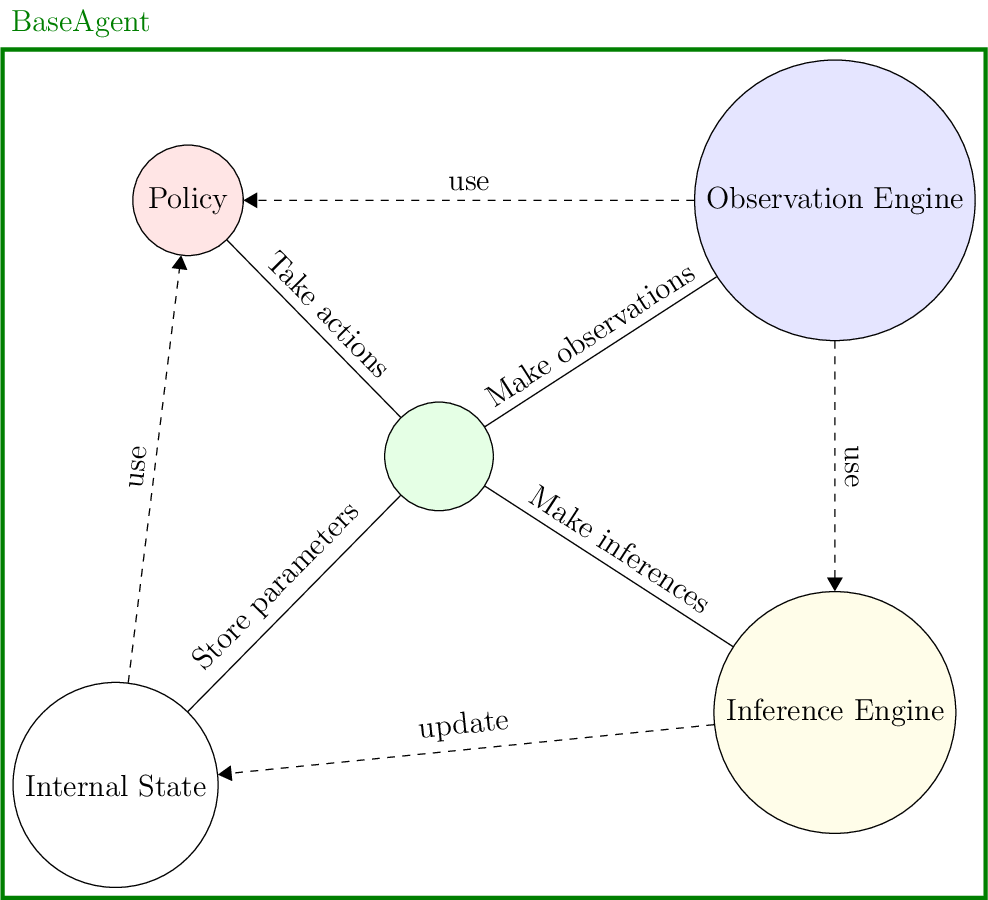

Agents
Agents are defined by four components:
An internal state, which essentially gives memory to the agent;
An observation engine, which generates observations from the game state, giving the agent the ability to perceive;
An inference engine, with which the agent modifies its internal state, giving it the ability to learn;
A policy, used to take actions, giving the agent the ability to make decisions.

Fig. 10 Agent structure
You define a new agent by subclassing the BaseAgent class. As an example, we now create an agent which goes with the ExampleTask that we defined in Tasks. We make an agent with a 'goal' state to indicate the value for 'x' that it wants to achieve, and make its available actions \([-1,0,1]\). These actions are chosen via the ExamplePolicy (see Policies).
1class ExampleUser(BaseAgent):
2 """An Example of a User.
3
4 An agent that handles the ExamplePolicy, has a single 1d state, and has the default observation and inference engines.
5 See the documentation of the :py:mod:`BaseAgent <coopihc.agents.BaseAgent.BaseAgent>` class for more details.
6
7 :meta public:
8 """
9
10 def __init__(self, *args, **kwargs):
11
12 # Define an internal state with a 'goal' substate
13 state = State()
14 state["goal"] = discrete_array_element(init=4, low=-4, high=4)
15
16 # Define policy
17 action_state = State()
18 action_state["action"] = discrete_array_element(init=0, low=-1, high=1)
19 agent_policy = ExamplePolicy(action_state=action_state)
20
21 # Use default observation and inference engines
22 observation_engine = None
23 inference_engine = None
24
25 super().__init__(
26 "user",
27 *args,
28 agent_policy=agent_policy,
29 agent_observation_engine=observation_engine,
30 agent_inference_engine=inference_engine,
31 agent_state=state,
32 **kwargs
33 )
34
35 def reset(self, dic=None):
36 """reset
37
38 Override default behaviour of BaseAgent which would randomly sample new goal values on each reset. Here for purpose of demonstration we impose a goal = 4
39
40 :meta public:
41 """
42 self.state["goal"] = 4
Note
All 4 components default to their corresponding base implementation if not provided.
You can verify that the user model works as intended, by bundling it with the task. Since we haven’t provided an assistant yet, we slightly change the task very, redefining its on_assistant_action().
1
2
3class ExampleTaskWithoutAssistant(ExampleTask):
4 def on_assistant_action(self, *args, **kwargs):
5 return self.state, 0, False
6
7
8example_task = ExampleTaskWithoutAssistant()
9example_user = ExampleUser()
10bundle = Bundle(task=example_task, user=example_user)
11bundle.reset(go_to = 1)
12
13while True:
14 state, rewards, is_done = bundle.step()
15 if is_done:
16 break
Overriding components
Sometimes, you want to change just one component of an agent. To make this easy, you can override components by calling the override_X keyword. For example, here is an example on how to override the policy of the agent NonMinimalAgent which already has a predefined policy by a BasePolicy. You can pass keyword arguments to the policy.
1 policy = BasePolicy()
2 agent = NonMinimalAgent(override_policy=(policy, {}))
LQRControllers
Not documented yet, see API Reference